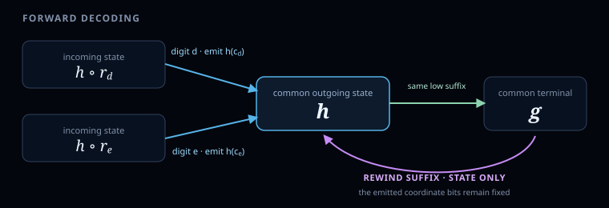

\[
\nu_2(g)+\nu_2(r)
=V(rW)=V(W)+2\nu_2(r).
\]
A finite-step walk in \(\mathbb Z^3\) with no three collinear vertices
Theorem. There exist a finite set \(S\subseteq\mathbb Z^3\) and an infinite sequence \(P_0,P_1,\ldots\in\mathbb Z^3\) such that
\[
P_{a+1}-P_a\in S\qquad(a\ge0),
\]
and no three distinct terms of the sequence are collinear.
Proof engine
Encode the terminal Hilbert state in matching low planar bits and a low base-4 height digit. The same-state pair law then becomes an exact identity for every pair.
After defining the Hilbert decoder, the argument has three tasks:
1
Prove the pair law. Same-state index gaps and planar chords have the same binary fingerprint.
2
Encode the state. Use matching Gray-code corners and height residues to obtain one identity for every pair.
3
Contradict collinearity. Three applications of the all-pairs law force two odd numbers to have an odd sum.
Proof. We prove the same-state law, encode each terminal state in the coordinates, apply the resulting all-pairs law, and bound every successive step.
1. Trace the Hilbert path and record its orientation
A base-4 digit chooses one of four quadrants. In the basic U-shaped order, their local addresses are
\[
\begin{gathered}
c_0=(0,0),\quad c_1=(0,1),\\
c_2=(1,1),\quad c_3=(1,0).
\end{gathered}
\]
Inside each chosen quadrant sits a smaller U-shaped route. To connect the four copies, that smaller route may need to be left alone, have its coordinates swapped, be swapped and complemented, or be half-turned. On a local coordinate pair \((x,y)\in\{0,1\}^2\), call these four transformations
\[
\begin{aligned}
I(x,y)&=(x,y),\\
S(x,y)&=(y,x),\\
T(x,y)&=(1-y,1-x),\\
C(x,y)&=(1-x,1-y).
\end{aligned}
\]
The state is the accumulated transformation carried from one digit to the next. It is orientation memory, not a point and not another coordinate. The mutable current state \(g\in K\) starts at \(g=I\). Digits \(0,1,2,3\) select the transition maps
\[
\begin{gathered}
r_0=S,\qquad r_1=r_2=I,\\
r_3=T.
\end{gathered}
\]
Here \(r_q\in K\) is the digit-indexed transition map selected by digit \(q\); it is not a numeric sequence.
The exact decoder
For a base-4 word \(w=q_{\ell-1}\cdots q_1q_0\), read the digits from most significant to least significant. At digit \(q_j\), the current state \(g\) emits one \(x\)-bit and one \(y\)-bit and is then replaced by the composed state:
\[
\begin{aligned}
(x_j,y_j)&=g(c_{q_j}),\\
g&\leftarrow g\circ r_{q_j}.
\end{aligned}
\]
Assemble the emitted bits by binary place value:
\[
H_\ell(w)=
\left(
\sum_{j=0}^{\ell-1}x_j2^j,\,
\sum_{j=0}^{\ell-1}y_j2^j
\right).
\]
Keep three directions separate
The decoder reads \(q_{\ell-1},\ldots,q_0\) from most significant to least significant. Digit \(q_j\) nevertheless writes the coordinate bits at binary place \(j\). “First mismatch from the low end” means the least \(j\ge0\) for which the two digits \(q_j\) differ.
After the final digit \(q_0\), define \(\sigma(w)\) to be the resulting value of \(g\). Thus \(g\) denotes the changing intermediate state, while \(\sigma(w)\) is its terminal value. It records the net turn or reflection accumulated during the nested quadrant descent; it is not a point or an additional coordinate.
Hilbert lemma. For every \(\ell\), \(H_\ell\) bijects the length-\(\ell\) base-4 words with the square \(\{0,\ldots,2^\ell-1\}^2\), and consecutive words in numerical order map to lattice neighbors. Moreover,
\[
H_{\ell+2}(00w)=H_\ell(w).
\]
Proof. First note that the decoder respects its current state: if a suffix is decoded from state \(g\) instead of \(I\), every later state and every emitted bit pair is obtained by applying \(g\) to the corresponding \(I\)-started decoding. Indeed, if the \(I\)-started state is \(h\), the other state is \(g\circ h\), and both update on the right by the same \(r_q\). Thus a suffix decoded from \(g\) is exactly the bitwise \(g\)-transform of the basic suffix route.
Now induct on \(\ell\), while also recording that the order-\(\ell\) route starts at \((0,0)\) and ends at \((2^\ell-1,0)\). To form the next order, the first digit places four transformed copies in four disjoint quadrants. If \(N=2^\ell\), applying \(S\) bit by bit sends \((x,y)\) to \((y,x)\), while applying \(T\) bit by bit sends it to \((N-1-y,N-1-x)\). The four copies therefore have start–end pairs
\[
\begin{aligned}
(0,0)&\to(0,N-1),\\
(0,N)&\to(N-1,N),\\
(N,N)&\to(2N-1,N),\\
(2N-1,N-1)&\to(2N-1,0).
\end{aligned}
\]
The maps \(S\) and \(T\) only swap or reflect square coordinates, so they preserve unit \(\ell^1\)-adjacency inside each transformed copy. The three junctions are also single lattice steps: \((0,1)\), \((1,0)\), and \((0,-1)\). Disjoint quadrants give bijectivity. Finally, two leading zeroes emit \((0,0)\) twice and carry the state through \(I\to S\to I\), so they change neither the point nor the state in which the remaining word is read. \(\square\)
For \(n\in\mathbb N\), pad its base-4 expansion on the left to any sufficiently large even length and define \(H(n)\) by the lemma. If \(m\ne n\), choose one even length large enough for both words. They remain distinct, so finite-order bijectivity gives \(H(m)\ne H(n)\). For \(n\) and \(n+1\), choose one common even length; finite-order adjacency, including across a base-4 carry, gives
\[
\lVert H(n+1)-H(n)\rVert_1=1.
\]

Only digits \(0\) and \(3\) change the state. The transformations \(S\) and \(T\) commute and each undoes itself, so the terminal state is exactly
\[
\begin{gathered}
\sigma(w)
=S^{\,N_0(w)\bmod2}
T^{\,N_3(w)\bmod2},\\
\sigma(w)\in K:=\{I,S,T,C\},
\end{gathered}
\]
where \(N_0(w)\) and \(N_3(w)\) count the \(0\)- and \(3\)-digits. Thus the terminal state remembers only whether those two counts are even or odd. Two leading zeroes leave it unchanged, so the same even padding defines \(\sigma(n)\) for every integer \(n\). The inline state map draws these four transformed quadrant routes.
2. Prove the same-state pair law
Intuitively, \(V(u)\) locates the first nonzero binary scale of a planar chord: it records twice that scale, plus one when both coordinates first become nonzero there.
Formally, for a nonzero integer \(t\), let \(\nu_2(t)\) count the factors of \(2\) in \(|t|\), and put \(\nu_2(0)=\infty\). For a nonzero planar vector \(u=(u_x,u_y)\), define
\[
\begin{aligned}
p(u)&=\min\{\nu_2(u_x),\nu_2(u_y)\},\\
\epsilon(u)&=
\begin{cases}
1,&\nu_2(u_x)=\nu_2(u_y),\\
0,&\nu_2(u_x)\ne\nu_2(u_y),
\end{cases}\\
V(u)&=2p(u)+\epsilon(u).
\end{aligned}
\]
After removing \(2^{p(u)}\), the fingerprint is even when one coordinate is odd and odd when both are odd. Multiplication by \(2\) shifts both coordinate bit streams one place. Because \(V\) reserves the consecutive values \(2j\) and \(2j+1\) for the two parity types at scale \(j\), one scale shift adds two. More generally, multiplying by a positive integer \(k\) shifts both coordinate valuations by \(\nu_2(k)\), so
\[
V(ku)=V(u)+2\nu_2(k).
\tag{1}
\]
Pair lemma. If \(m\ne n\) and the two indices have the same terminal state, then
\[
V\bigl(H(n)-H(m)\bigr)=\nu_2(n-m).
\tag{2}
\]
Proof. By symmetry take \(m<n\) and pad both base-4 expansions to one common even length. Write the digits of \(m\) as \(q_{\ell-1}\cdots q_0\) and those of \(n\) as \(q'_{\ell-1}\cdots q'_0\). Put \(j=\min\{k\ge0:q_k\ne q'_k\}\), so positions \(0,\ldots,j-1\) are the common low suffix, and set \(d=q_j\), \(e=q'_j\). Then
\[
\begin{aligned}
n-m&=4^jM,\\
M&\equiv e-d\pmod4.
\end{aligned}
\]
The equal low-digit suffix alone does not guarantee that the two mismatching digits are viewed in the same orientation. This is exactly where equal terminal states are used. Start from those equal final states and undo the common low suffix in lockstep. Every state transition is invertible, so immediately after the mismatching digit both decoders reach one common state \(h\).
The circle \(\circ\) means function composition: \((f\circ g)(z)=f(g(z))\), so the transformation on the right acts first. The incoming states at the mismatch are \(h\circ r_d\) and \(h\circ r_e\). Since the four fixed choices satisfy \(r_q(c_q)=c_q\), the two emitted bit pairs are
\[
\begin{aligned}
(h\circ r_d)(c_d)&=h\bigl(r_d(c_d)\bigr)=h(c_d),\\
(h\circ r_e)(c_e)&=h\bigl(r_e(c_e)\bigr)=h(c_e).
\end{aligned}
\]

Thus both digits are compared through one common square symmetry \(h\). The four corners \(c_0,c_1,c_2,c_3\) form a cyclic Gray code: a digit difference odd modulo \(4\) changes exactly one coordinate, while a difference of \(2\) modulo \(4\) changes both. Every \(h\in K\) only swaps coordinates and complements bits, so it can permute which coordinates differ but cannot change one differing coordinate into two or vice versa. Starting from the common state \(h\), the identical lower suffix also emits identical bits below position \(j\).
If coordinate bits first differ at place \(j\), their coordinate difference has the form \(\pm2^j+2^{j+1}L=2^j(\pm1+2L)\). The bracket is odd, so higher bits cannot cancel the mismatch or add another factor of two.
If \(e-d\) is odd, then \(\nu_2(n-m)=2j\), and exactly one coordinate first differs at binary position \(j\), so \(V=2j\). If \(e-d\equiv2\pmod4\), then \(\nu_2(n-m)=2j+1\), and both coordinates first differ there, so \(V=2j+1\). These are all possibilities, proving (2). \(\square\)
3. Encode the terminal state in the coordinates
Label the four states in cyclic order and assign each state the corresponding Gray-code corner:
\[
\begin{array}{c|cccc}
g&I&S&C&T\\ \hline
\lambda(g)&0&1&2&3\\
u_g&(0,0)&(0,1)&(1,1)&(1,0).
\end{array}
\]
For every \(n\), use one low binary place in each planar coordinate for the corner code and one low base-4 place in the height for the state label:
\[
\begin{aligned}
G(n)&=2H(n)+u_{\sigma(n)},\\
z(n)&=4n+\lambda(\sigma(n)),\\
P_n&=(G(n),z(n)).
\end{aligned}
\tag{3}
\]
One state, two matching encodings
The planar corner and height residue carry the same cyclic label. Their parity patterns are therefore synchronized for every pair of indices.
4. Extend the pair law to every pair
All-pairs law. For every \(m\ne n\), the planar chord is nonzero and
\[
V\bigl(G(n)-G(m)\bigr)
=\nu_2\bigl(|z(n)-z(m)|\bigr).
\tag{4}
\]
Proof. Put \(d=n-m\), \(i=\lambda(\sigma(m))\), \(j=\lambda(\sigma(n))\), and \(X=H(n)-H(m)\). Then
\[
\begin{aligned}
G(n)-G(m)&=2X+c_j-c_i,\\
z(n)-z(m)&=4d+j-i.
\end{aligned}
\]
Same label: \(i=j\)
The corner codes cancel. Scaling the same-state law gives \(V(2X)=V(X)+2=\nu_2(d)+2=\nu_2(4d)\).
Adjacent labels: \(j-i\) odd
Adjacent Gray-code corners differ in one bit. Exactly one planar coordinate and the height gap are odd, so both valuations are \(0\).
Opposite labels: \(j-i=\pm2\)
Opposite corners differ in both bits. Both planar coordinates are odd and the height gap is twice an odd number, so both valuations are \(1\).
These cases exhaust all state pairs, proving (4). \(\square\)
5. Finish with the all-pairs contradiction
The heights are strictly increasing because
\[
1\le z(n+1)-z(n)
=4+\lambda(\sigma(n+1))-\lambda(\sigma(n))
\le7.
\]
Suppose \(a<b<c\) and \(P_a,P_b,P_c\) lie on one line. Write
\[
\begin{aligned}
A&=z(b)-z(a),&B&=z(c)-z(b),\\
X&=G(b)-G(a),&Y&=G(c)-G(b).
\end{aligned}
\]
Collinearity and \(A,B>0\) give \(BX=AY\). Set \(A=gr\), \(B=gs\), where \(g=\gcd(A,B)\) and \(\gcd(r,s)=1\). Cancelling \(g\) and using coordinatewise coprimality produces an integer vector \(W\ne0\) with
\[
X=rW,\qquad Y=sW.
\tag{5}
\]
\[
\nu_2(g)+\nu_2(s)
=V(sW)=V(W)+2\nu_2(s).
\]
The two equations force \(\nu_2(r)=\nu_2(s)\). Coprimality then makes both zero: \(r\) and \(s\) are odd, and \(V(W)=\nu_2(g)\).
The endpoint pair has planar chord \((r+s)W\) and height gap \(g(r+s)\). If \(t=\nu_2(r+s)\), its all-pairs identity becomes
\[
\nu_2(g)+t=V(W)+2t=\nu_2(g)+2t.
\]
Contradiction
\(r+s\) would have to be both even and odd.
The endpoint equation forces \(t=0\), so \(r+s\) is odd. The adjacent equations forced both \(r\) and \(s\) to be odd, so their sum is even. Therefore the Hilbert lift contains no collinear triple.
6. Bound the finite step menu
One successive planar displacement is twice a Hilbert unit step plus the difference of two corner codes:
\[
\begin{aligned}
G(n+1)-G(n)
&=2\bigl(H(n+1)-H(n)\bigr)
+u_{\sigma(n+1)}-u_{\sigma(n)},\\
z(n+1)-z(n)
&=4+\lambda(\sigma(n+1))-\lambda(\sigma(n)).
\end{aligned}
\]
The doubled Hilbert step changes one planar coordinate by \(2\); each corner-code coordinate changes by at most \(1\). Hence every step belongs to
\[
S=\{(d_x,d_y,d_z)\in\mathbb Z^3:
|d_x|,|d_y|\le3,\ 1\le d_z\le7\}.
\]
The strictly increasing height makes the sequence infinite and injective. The previous section excludes every collinear triple, completing the proof. \(\square\)
Verification and evidence—not proof premises
Proof boundary
The unconditional proof ends above. The material here audits the formal statement and implementation; no finite computation is used as a premise.
Self-contained proof
The decoder, same-state pair law, terminal-state coordinate encoding, collinearity contradiction, and finite-menu bound establish the infinite result.
Lean verification
Hilbert193.erdos193_unconditional kernel-checks the formal construction against pinned Lean and Mathlib versions.